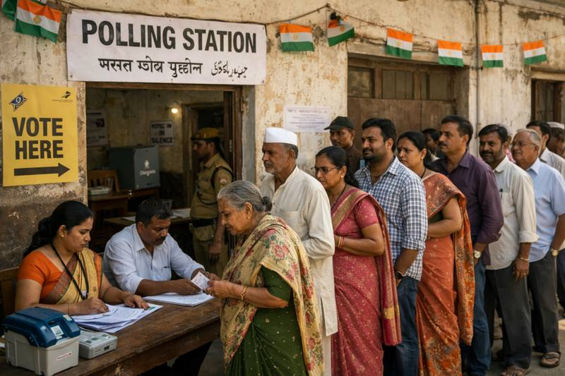

वोटर लिस्ट से कटे नाम क्या दोबारा जुड़ेंगे? EC का SIR हो चुके 20 राज्यों के लिए बड़ा कदम

मतदान केंद्र पर अपनी बारी का इंतज़ार करते मतदाता
मतदाता सूचियों से बड़े पैमाने पर नाम हटाए जाने को लेकर उठ रहे सवालों के बीच चुनाव आयोग ने उन लोगों को फिर से मतदाता सूची में शामिल करने के लिए विशेष अभियान चलाने का फैसला किया है, जो विशेष गहन पुनरीक्षण यानी SIR के दौरान सूची में शामिल होने से रह गए हैं. इंडियन एक्सप्रेस की रिपोर्ट के अनुसार, यह अभियान उन 20 राज्यों और केंद्र शासित प्रदेशों में चलाया जाएगा, जहां SIR की प्रक्रिया पूरी हो चुकी है. इसके तहत पहली बार वोट देने वाले युवाओं और छूटे हुए पात्र मतदाताओं को भी सूची में शामिल किया जाएगा. 29 सितंबर को राज्यों को भेजा गया निर्देश चुनाव आयोग ने 29 सितंबर को सभी राज्यों के मुख्य निर्वाचन अधिकारियों को लिखित निर्देश भेजे थे. इसके बाद गुरुवार को सभी राज्यों के मुख्य निर्वाचन अधिकारियों के साथ हुई वीडियो कॉन्फ्रेंस में भी इस निर्देश को दोहराया गया. आयोग ने कहा कि जिन राज्यों और क